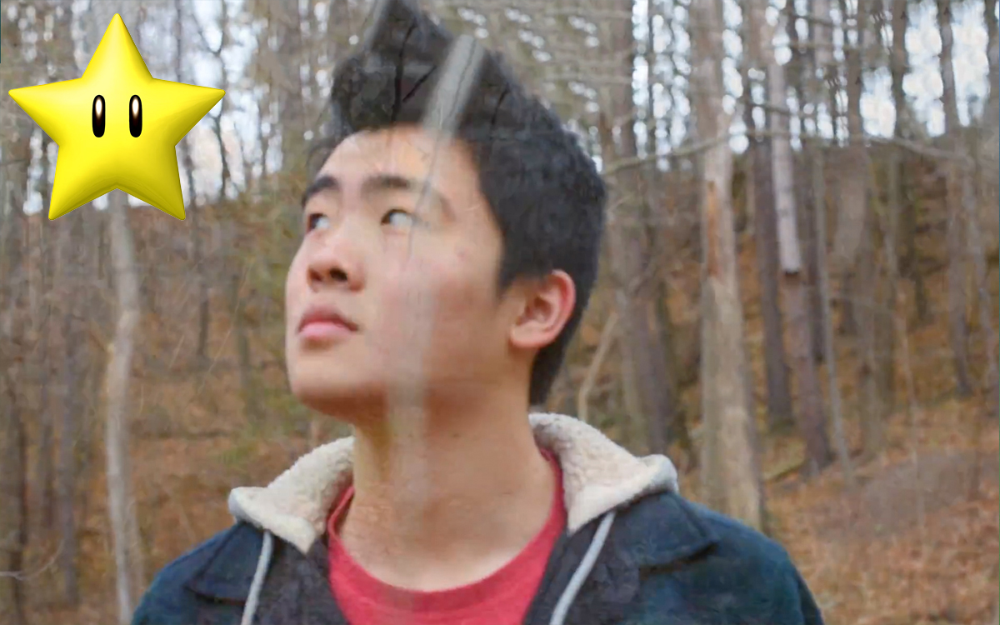

Reimagining of Tarot Cards - "The Irrelevant Elephant"
This Tarot card was inspired by the album "Melophobia" by Cage the Elephant. The album was written at a time when the songwriter, Matt Shultz, was going through a rough patch in his life. His marriage was not going well, and many internal frustrations were expressed through his album. The Tarot card this artwork was modelled after, the 9 of Hearts, is symbolic of excessive worrying and inner turmoil. This is represented through the black and white background the elephant stands on, where situations are perceived at either one extreme or another. The lightning bolts inside the elephant express the struggles he deals with from within, and the key he holds gives him the power to end his suffering at any time.
Reimagining of Tarot Cards - "Let Them See."
Created with National Geographic clippings and hole punches.
Reimagining of Tarot Cards - The Machine
The final pachinko machine, featured at Nuit Blanche 2017.
Anatomy Sketches - Disembodied Face
Facial features were one of the most interesting topics we covered. I learned the nooks and crannies in the face, such as the septum, ala, and apex of the nose; the tragus, antitragus, and lobe of the ear; and the cheekbone, tear duct, and hood of the eye. One of the most difficult parts of this unit was finding the right balance between detail and shading and detail. I used different pencil thicknesses to draw different parts of the eye. For example, a fine mechanical pencil was used for the eyebrow and eyelashes, while a thick, blunt wooden pencil was used to shade under the eye. I experimented with the pressure of the pencil, as can be seen on the relatively darker upper lip compared to the rest of the pieces. All in all, I thoroughly enjoyed this unit and have learned many aspects of sketching from it.

Life Drawings - Flip
My first stab at a nude model. I didn't really stab him.
Life Drawings - Sitting From Your Past Self
This life drawing is one of my favourite pieces from the unit. This particular piece drawn on day 3 was the point of when my drawings actually started resembling real humans. Although it was only a 5-minute piece, I managed to capture important aspects of the model, including creases on the skin, shadows, and overlap. It is obvious that I am only a beginner at life drawings, which is why this piece has so much significance to me.

Music Video Project - "Somewhere Only We Know"
The video was inspired by my favourite song, "Somewhere Only We Know" by Keane. It starts off with long shots taking an entire four beats of the song, then accelerating nearing the chorus, personifying the inner struggles being faced. I have several long shots taking eight beats nearing the end of the song, such as the out-of-body spinning shot at the end. I have found solace and am at peace with myself after this scene. I interpreted the lyrics in “Somewhere Only We Know” as someone recalling cherished memories and longing to live through them again. In my video, I took this as a literal translation from the forest to the subway where I am longing for a past that’s gone by while living through an imperfect present. Big thanks to Eileen for helping me with filming.
Music Video Project - The Storyboard Process
A snapshot of the behind-the-scenes planning .
3D Printed Low-Poly Bunny Pot
In my spare time, I propagate succulent plants. However, many plants I grow are often eaten by rabbits. I thought it would be ironic if I created a 3D bunny as a pot for my succulent plants. I took a basic model off Thingiverse, added additional polygons, and put a hole in the body to fit my plants with the software Tinkercad. In the end, I was left with a fancy and high-tech addition to my plant collection.
ISP - Custom Mechanical Keyboard
What if an ordinary item that you use everyday could be more than ordinary? What if that item was a keyboard? How could something so mundane be made creative? Being a keyboard enthusiast myself, I strived to answer that question. And to find how interesting a keyboard really is, I decided to build one myself.
Click here for the story behind the process!
{kind=link}
{kind=link}
{kind=link}
{kind=link}
{kind=link}
{kind=link}
{kind=link}
{kind=link}
{kind=link}